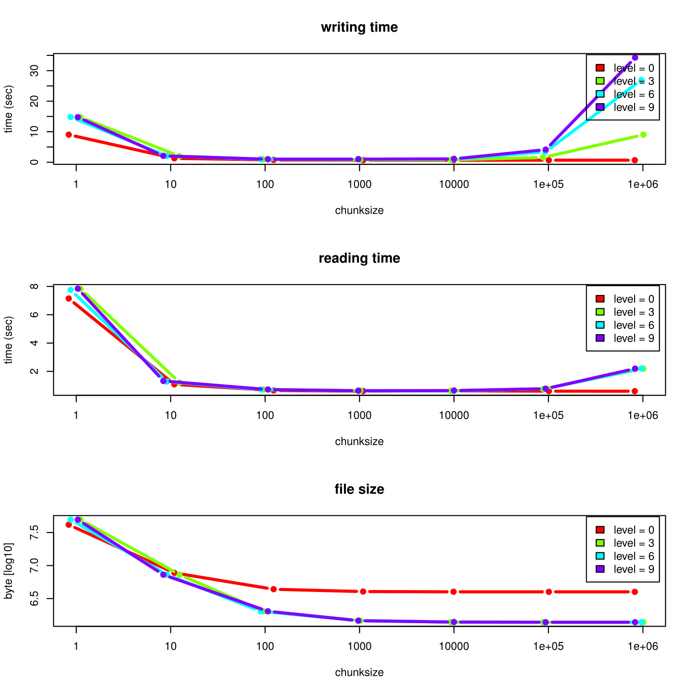

rhdf5 - HDF5 interface for R
Bernd Fischer
DKFZMike L. Smith
de.NBI & EMBL HeidelbergSource:
vignettes/rhdf5.Rmd
rhdf5.RmdIntroduction
The package is an R interface for HDF5. On the one hand it implements R interfaces to many of the low level functions from the C interface. On the other hand it provides high level convenience functions on R level to make a usage of HDF5 files more easy.
Installation of the HDF5 package
To install the rhdf5 package, you need a current version (>= 4.0.0) of R (www.r-project.org). After installing R you can run the following commands from the R command shell to install rhdf5.
install.packages("BiocManager")
BiocManager::install("rhdf5")High level R-HDF5 functions
Creating an HDF5 file and group hierarchy
An empty HDF5 file is created by
library(rhdf5)
h5createFile("myhdf5file.h5")The HDF5 file can contain a group hierarchy. We create a number of groups and list the file content afterwards.
h5createGroup("myhdf5file.h5", "foo")
h5createGroup("myhdf5file.h5", "baa")
h5createGroup("myhdf5file.h5", "foo/foobaa")
h5ls("myhdf5file.h5")## group name otype dclass dim
## 0 / baa H5I_GROUP
## 1 / foo H5I_GROUP
## 2 /foo foobaa H5I_GROUPWriting and reading objects
Objects can be written to the HDF5 file. Attributes attached to an
object are written as well, if write.attributes=TRUE is
given as argument to h5write(). Note that not all
R-attributes can be written as HDF5 attributes.
A <- matrix(1:10, nrow = 5, ncol = 2)
h5write(A, "myhdf5file.h5", "foo/A")
B <- array(seq(0.1, 2.0, by = 0.1), dim = c(5, 2, 2))
attr(B, "scale") <- "liter"
h5write(B, "myhdf5file.h5", "foo/B")
C <- matrix(
paste(LETTERS[1:10], LETTERS[11:20], collapse = ""),
nrow = 2,
ncol = 5
)
h5write(C, "myhdf5file.h5", "foo/foobaa/C")
df <- data.frame(
1L:5L,
seq(0, 1, length.out = 5),
c("ab", "cde", "fghi", "a", "s"),
stringsAsFactors = FALSE
)
h5write(df, "myhdf5file.h5", "df")
h5ls("myhdf5file.h5")## group name otype dclass dim
## 0 / baa H5I_GROUP
## 1 / df H5I_DATASET COMPOUND 5
## 2 / foo H5I_GROUP
## 3 /foo A H5I_DATASET INTEGER 5 x 2
## 4 /foo B H5I_DATASET FLOAT 5 x 2 x 2
## 5 /foo foobaa H5I_GROUP
## 6 /foo/foobaa C H5I_DATASET STRING 2 x 5
D <- h5read("myhdf5file.h5", "foo/A")
E <- h5read("myhdf5file.h5", "foo/B")
F <- h5read("myhdf5file.h5", "foo/foobaa/C")
G <- h5read("myhdf5file.h5", "df")If a dataset with the given name does not yet exist, a
dataset is created in the HDF5 file and the object obj is
written to the HDF5 file. If a dataset with the given name
already exists and the datatype and the dimensions are the same as for
the object obj, the data in the file is overwritten. If the
dataset already exists and either the datatype or the dimensions are
different, h5write() fails.
Writing and reading objects with file, group and dataset handles
File, group and dataset handles are a simpler way to read (and
partially to write) HDF5 files. A file is opened by
H5Fopen().
h5f <- H5Fopen("myhdf5file.h5")
h5f## HDF5 FILE
## name /
## filename
##
## name otype dclass dim
## 0 baa H5I_GROUP
## 1 df H5I_DATASET COMPOUND 5
## 2 foo H5I_GROUPThe $ and & operators can be used to
access the next group level. While the $ operator reads the
object from disk, the & operator returns a group or
dataset handle.
h5f$df## X1L.5L seq.0..1..length.out...5. c..ab....cde....fghi....a....s..
## 1 1 0.00 ab
## 2 2 0.25 cde
## 3 3 0.50 fghi
## 4 4 0.75 a
## 5 5 1.00 s
h5f & "df"## HDF5 DATASET
## name /df
## filename
## type H5T_COMPOUND
## rank 1
## size 5
## maxsize 5Both of the following code lines return the matrix C.
Note however, that the first version reads the whole tree
/foo in memory and then subsets to /foobaa/C,
and the second version only reads the matrix C. The first
$ in h5f$foo$foobaa$C reads the dataset, the
other $ are accessors of a list. Remind that this can have
severe consequences for large datasets and datastructures.
h5f$foo$foobaa$C## [,1] [,2]
## [1,] "A KB LC MD NE OF PG QH RI SJ T" "A KB LC MD NE OF PG QH RI SJ T"
## [2,] "A KB LC MD NE OF PG QH RI SJ T" "A KB LC MD NE OF PG QH RI SJ T"
## [,3] [,4]
## [1,] "A KB LC MD NE OF PG QH RI SJ T" "A KB LC MD NE OF PG QH RI SJ T"
## [2,] "A KB LC MD NE OF PG QH RI SJ T" "A KB LC MD NE OF PG QH RI SJ T"
## [,5]
## [1,] "A KB LC MD NE OF PG QH RI SJ T"
## [2,] "A KB LC MD NE OF PG QH RI SJ T"
h5f$"/foo/foobaa/C"## [,1] [,2]
## [1,] "A KB LC MD NE OF PG QH RI SJ T" "A KB LC MD NE OF PG QH RI SJ T"
## [2,] "A KB LC MD NE OF PG QH RI SJ T" "A KB LC MD NE OF PG QH RI SJ T"
## [,3] [,4]
## [1,] "A KB LC MD NE OF PG QH RI SJ T" "A KB LC MD NE OF PG QH RI SJ T"
## [2,] "A KB LC MD NE OF PG QH RI SJ T" "A KB LC MD NE OF PG QH RI SJ T"
## [,5]
## [1,] "A KB LC MD NE OF PG QH RI SJ T"
## [2,] "A KB LC MD NE OF PG QH RI SJ T"One can as well return a dataset handle for a matrix and then read the matrix in chunks for out-of-memory computations. .
h5d <- h5f & "/foo/B"
h5d[]## , , 1
##
## [,1] [,2]
## [1,] 0.1 0.6
## [2,] 0.2 0.7
## [3,] 0.3 0.8
## [4,] 0.4 0.9
## [5,] 0.5 1.0
##
## , , 2
##
## [,1] [,2]
## [1,] 1.1 1.6
## [2,] 1.2 1.7
## [3,] 1.3 1.8
## [4,] 1.4 1.9
## [5,] 1.5 2.0
h5d[3, , ]## [,1] [,2]
## [1,] 0.3 1.3
## [2,] 0.8 1.8The same works as well for writing to datasets.
h5d[3, , ] <- 1:4
H5Fflush(h5f)Remind again that in the following code the first version does not change the data on disk, but the second does.
h5f$foo$B <- 101:120
h5f$"/foo/B" <- 101:120It is important to close all dataset, group, and file handles when not used anymore
or close all open HDF5 handles in the environment by
Writing and reading with subsetting, chunking and compression
The rhdf5 package provides two ways of subsetting. One can specify the submatrix with the R-style index lists or with the HDF5 style hyperslabs. Note, that the two next examples below show two alternative ways for reading and writing the exact same submatrices. Before writing subsetting or hyperslabbing, the dataset with full dimensions has to be created in the HDF5 file. This can be achieved by writing once an array with full dimensions as in Section or by creating a dataset. Afterwards the dataset can be written sequentially.
Influence of chunk size and compression level
The chosen chunk size and compression level have a strong impact on the reading and writing time as well as on the resulting file size. In an example an integer vector of size 10e7 is written to an HDF5 file. The file is written in subvectors of size 10’000. The definition of the chunk size influences the reading as well as the writing time. If the chunk size is much smaller or much larger than actually used, the runtime performance decreases dramatically. Furthermore the file size is larger for smaller chunk sizes, because of an overhead. The compression can be much more efficient when the chunk size is very large. The following figure illustrates the runtime and file size behaviour as a function of the chunk size for a small toy dataset.

After the creation of the dataset, the data can be written
sequentially to the HDF5 file. Subsetting in R-style
needs the specification of the argument index to h5read()
and h5write().
h5createDataset(
"myhdf5file.h5",
"foo/S",
c(5, 8),
storage.mode = "integer",
chunk = c(5, 1),
level = 7
)
h5write(
matrix(1:5, nrow = 5, ncol = 1),
file = "myhdf5file.h5",
name = "foo/S",
index = list(NULL, 1)
)
h5read("myhdf5file.h5", "foo/S")## [,1] [,2] [,3] [,4] [,5] [,6] [,7] [,8]
## [1,] 1 0 0 0 0 0 0 0
## [2,] 2 0 0 0 0 0 0 0
## [3,] 3 0 0 0 0 0 0 0
## [4,] 4 0 0 0 0 0 0 0
## [5,] 5 0 0 0 0 0 0 0
h5write(6:10, file = "myhdf5file.h5", name = "foo/S", index = list(1, 2:6))
h5read("myhdf5file.h5", "foo/S")## [,1] [,2] [,3] [,4] [,5] [,6] [,7] [,8]
## [1,] 1 6 7 8 9 10 0 0
## [2,] 2 0 0 0 0 0 0 0
## [3,] 3 0 0 0 0 0 0 0
## [4,] 4 0 0 0 0 0 0 0
## [5,] 5 0 0 0 0 0 0 0
h5write(
matrix(11:40, nrow = 5, ncol = 6),
file = "myhdf5file.h5",
name = "foo/S",
index = list(1:5, 3:8)
)
h5read("myhdf5file.h5", "foo/S")## [,1] [,2] [,3] [,4] [,5] [,6] [,7] [,8]
## [1,] 1 6 11 16 21 26 31 36
## [2,] 2 0 12 17 22 27 32 37
## [3,] 3 0 13 18 23 28 33 38
## [4,] 4 0 14 19 24 29 34 39
## [5,] 5 0 15 20 25 30 35 40
h5write(
matrix(141:144, nrow = 2, ncol = 2),
file = "myhdf5file.h5",
name = "foo/S",
index = list(3:4, 1:2)
)
h5read("myhdf5file.h5", "foo/S")## [,1] [,2] [,3] [,4] [,5] [,6] [,7] [,8]
## [1,] 1 6 11 16 21 26 31 36
## [2,] 2 0 12 17 22 27 32 37
## [3,] 141 143 13 18 23 28 33 38
## [4,] 142 144 14 19 24 29 34 39
## [5,] 5 0 15 20 25 30 35 40
h5write(
matrix(151:154, nrow = 2, ncol = 2),
file = "myhdf5file.h5",
name = "foo/S",
index = list(2:3, c(3, 6))
)
h5read("myhdf5file.h5", "foo/S")## [,1] [,2] [,3] [,4] [,5] [,6] [,7] [,8]
## [1,] 1 6 11 16 21 26 31 36
## [2,] 2 0 151 17 22 153 32 37
## [3,] 141 143 152 18 23 154 33 38
## [4,] 142 144 14 19 24 29 34 39
## [5,] 5 0 15 20 25 30 35 40## [,1] [,2]
## [1,] 0 151
## [2,] 143 152## [,1] [,2]
## [1,] 0 17
## [2,] 143 18## [,1] [,2] [,3] [,4]
## [1,] 2 0 17 22
## [2,] 141 143 18 23The HDF5 hyperslabs are defined by some of the arguments
start, stride, count, and
block. These arguments are not effective, if the argument
index is specified.
h5createDataset(
"myhdf5file.h5",
"foo/H",
c(5, 8),
storage.mode = "integer",
chunk = c(5, 1),
level = 7
)
h5write(
matrix(1:5, nrow = 5, ncol = 1),
file = "myhdf5file.h5",
name = "foo/H",
start = c(1, 1)
)
h5read("myhdf5file.h5", "foo/H")## [,1] [,2] [,3] [,4] [,5] [,6] [,7] [,8]
## [1,] 1 0 0 0 0 0 0 0
## [2,] 2 0 0 0 0 0 0 0
## [3,] 3 0 0 0 0 0 0 0
## [4,] 4 0 0 0 0 0 0 0
## [5,] 5 0 0 0 0 0 0 0
h5write(
6:10,
file = "myhdf5file.h5",
name = "foo/H",
start = c(1, 2),
count = c(1, 5)
)
h5read("myhdf5file.h5", "foo/H")## [,1] [,2] [,3] [,4] [,5] [,6] [,7] [,8]
## [1,] 1 6 7 8 9 10 0 0
## [2,] 2 0 0 0 0 0 0 0
## [3,] 3 0 0 0 0 0 0 0
## [4,] 4 0 0 0 0 0 0 0
## [5,] 5 0 0 0 0 0 0 0
h5write(
matrix(11:40, nrow = 5, ncol = 6),
file = "myhdf5file.h5",
name = "foo/H",
start = c(1, 3)
)
h5read("myhdf5file.h5", "foo/H")## [,1] [,2] [,3] [,4] [,5] [,6] [,7] [,8]
## [1,] 1 6 11 16 21 26 31 36
## [2,] 2 0 12 17 22 27 32 37
## [3,] 3 0 13 18 23 28 33 38
## [4,] 4 0 14 19 24 29 34 39
## [5,] 5 0 15 20 25 30 35 40
h5write(
matrix(141:144, nrow = 2, ncol = 2),
file = "myhdf5file.h5",
name = "foo/H",
start = c(3, 1)
)
h5read("myhdf5file.h5", "foo/H")## [,1] [,2] [,3] [,4] [,5] [,6] [,7] [,8]
## [1,] 1 6 11 16 21 26 31 36
## [2,] 2 0 12 17 22 27 32 37
## [3,] 141 143 13 18 23 28 33 38
## [4,] 142 144 14 19 24 29 34 39
## [5,] 5 0 15 20 25 30 35 40
h5write(
matrix(151:154, nrow = 2, ncol = 2),
file = "myhdf5file.h5",
name = "foo/H",
start = c(2, 3),
stride = c(1, 3)
)
h5read("myhdf5file.h5", "foo/H")## [,1] [,2] [,3] [,4] [,5] [,6] [,7] [,8]
## [1,] 1 6 11 16 21 26 31 36
## [2,] 2 0 151 17 22 153 32 37
## [3,] 141 143 152 18 23 154 33 38
## [4,] 142 144 14 19 24 29 34 39
## [5,] 5 0 15 20 25 30 35 40## [,1] [,2]
## [1,] 0 151
## [2,] 143 152## [,1] [,2]
## [1,] 0 17
## [2,] 143 18
h5read(
"myhdf5file.h5",
"foo/H",
start = c(2, 1),
stride = c(1, 3),
count = c(2, 2),
block = c(1, 2)
)## [,1] [,2] [,3] [,4]
## [1,] 2 0 17 22
## [2,] 141 143 18 23Saving multiple objects to an HDF5 file (h5save)
A number of objects can be written to the top level group of an HDF5
file with the function h5save() (as analogous to the base
R function save()).
A <- 1:7
B <- 1:18
D <- seq(0, 1, by = 0.1)
h5save(A, B, D, file = "newfile2.h5")
h5dump("newfile2.h5")## $A
## [1] 1 2 3 4 5 6 7
##
## $B
## [1] 1 2 3 4 5 6 7 8 9 10 11 12 13 14 15 16 17 18
##
## $D
## [1] 0.0 0.1 0.2 0.3 0.4 0.5 0.6 0.7 0.8 0.9 1.0List the content of an HDF5 file
The function h5ls() provides some ways of viewing the
content of an HDF5 file.
h5ls("myhdf5file.h5")## group name otype dclass dim
## 0 / baa H5I_GROUP
## 1 / df H5I_DATASET COMPOUND 5
## 2 / foo H5I_GROUP
## 3 /foo A H5I_DATASET INTEGER 5 x 2
## 4 /foo B H5I_DATASET FLOAT 5 x 2 x 2
## 5 /foo H H5I_DATASET INTEGER 5 x 8
## 6 /foo S H5I_DATASET INTEGER 5 x 8
## 7 /foo foobaa H5I_GROUP
## 8 /foo/foobaa C H5I_DATASET STRING 2 x 5
h5ls("myhdf5file.h5", all = TRUE)## group name ltype cset otype num_attrs dclass
## 0 / baa H5L_TYPE_HARD 0 H5I_GROUP 0
## 1 / df H5L_TYPE_HARD 0 H5I_DATASET 0 COMPOUND
## 2 / foo H5L_TYPE_HARD 0 H5I_GROUP 0
## 3 /foo A H5L_TYPE_HARD 0 H5I_DATASET 1 INTEGER
## 4 /foo B H5L_TYPE_HARD 0 H5I_DATASET 1 FLOAT
## 5 /foo H H5L_TYPE_HARD 0 H5I_DATASET 1 INTEGER
## 6 /foo S H5L_TYPE_HARD 0 H5I_DATASET 1 INTEGER
## 7 /foo foobaa H5L_TYPE_HARD 0 H5I_GROUP 0
## 8 /foo/foobaa C H5L_TYPE_HARD 0 H5I_DATASET 1 STRING
## dtype stype rank dim maxdim
## 0 0
## 1 H5T_COMPOUND SIMPLE 1 5 5
## 2 0
## 3 H5T_STD_I32LE SIMPLE 2 5 x 2 5 x 2
## 4 H5T_IEEE_F64LE SIMPLE 3 5 x 2 x 2 5 x 2 x 2
## 5 H5T_STD_I32LE SIMPLE 2 5 x 8 5 x 8
## 6 H5T_STD_I32LE SIMPLE 2 5 x 8 5 x 8
## 7 0
## 8 H5T_STRING SIMPLE 2 2 x 5 2 x 5
h5ls("myhdf5file.h5", recursive = 2)## group name otype dclass dim
## 0 / baa H5I_GROUP
## 1 / df H5I_DATASET COMPOUND 5
## 2 / foo H5I_GROUP
## 3 /foo A H5I_DATASET INTEGER 5 x 2
## 4 /foo B H5I_DATASET FLOAT 5 x 2 x 2
## 5 /foo H H5I_DATASET INTEGER 5 x 8
## 6 /foo S H5I_DATASET INTEGER 5 x 8
## 7 /foo foobaa H5I_GROUPDump the content of an HDF5 file
The function h5dump() is similar to the function
h5ls(). If used with the argument load=FALSE,
it produces the same result as h5ls(), but with the group
structure resolved as a hierarchy of lists. If the default argument
load=TRUE is used all datasets from the HDF5 file are
read.
h5dump("myhdf5file.h5", load = FALSE)## $baa
## NULL
##
## $df
## group name otype dclass dim
## 1 / df H5I_DATASET COMPOUND 5
##
## $foo
## $foo$A
## group name otype dclass dim
## 1 / A H5I_DATASET INTEGER 5 x 2
##
## $foo$B
## group name otype dclass dim
## 1 / B H5I_DATASET FLOAT 5 x 2 x 2
##
## $foo$H
## group name otype dclass dim
## 1 / H H5I_DATASET INTEGER 5 x 8
##
## $foo$S
## group name otype dclass dim
## 1 / S H5I_DATASET INTEGER 5 x 8
##
## $foo$foobaa
## $foo$foobaa$C
## group name otype dclass dim
## 1 / C H5I_DATASET STRING 2 x 5
D <- h5dump("myhdf5file.h5")Reading HDF5 files with external software
The content of the HDF5 file can be checked with the command line tool h5dump (available on linux-like systems with the HDF5 tools package installed) or with the graphical user interface HDFView (http://www.hdfgroup.org/hdf-java-html/hdfview/) available for all major platforms.
system2("h5dump", "myhdf5file.h5")Please note, that arrays appear as transposed matrices when opening it with a C-program (h5dump or HDFView). This is due to the fact the fastest changing dimension on C is the last one, but on R it is the first one (as in Fortran).
Removing content from an HDF5 file
As well as adding content to an HDF5 file, it is possible to remove
entries using the function h5delete(). To demonstrate it’s
use, we’ll first list the contents of a file and examine the size of the
file in bytes.
h5ls("myhdf5file.h5", recursive = 2)## group name otype dclass dim
## 0 / baa H5I_GROUP
## 1 / df H5I_DATASET COMPOUND 5
## 2 / foo H5I_GROUP
## 3 /foo A H5I_DATASET INTEGER 5 x 2
## 4 /foo B H5I_DATASET FLOAT 5 x 2 x 2
## 5 /foo H H5I_DATASET INTEGER 5 x 8
## 6 /foo S H5I_DATASET INTEGER 5 x 8
## 7 /foo foobaa H5I_GROUP
file.size("myhdf5file.h5")## [1] 26165We then use h5delete() to remove the df
dataset by providing the file name and the name of the dataset, e.g.
## group name otype dclass dim
## 0 / baa H5I_GROUP
## 1 / foo H5I_GROUP
## 2 /foo A H5I_DATASET INTEGER 5 x 2
## 3 /foo B H5I_DATASET FLOAT 5 x 2 x 2
## 4 /foo H H5I_DATASET INTEGER 5 x 8
## 5 /foo S H5I_DATASET INTEGER 5 x 8
## 6 /foo foobaa H5I_GROUPWe can see that the df entry has now disappeared
from the listing. In most cases, if you have a hierarchy within the
file, h5delete() will remove children of the deleted entry
too. In this example we remove foo and the datasets
below it are deleted too. Notice too that the size of the file as
decreased.
## group name otype dclass dim
## 0 / baa H5I_GROUP
file.size("myhdf5file.h5")## [1] 26105N.B. h5delete() does not explicitly traverse the
tree to remove child nodes. It only removes the named entry, and HDF5
will then remove child nodes if they are now orphaned. Hence it won’t
delete child nodes if you have a more complex structure where a child
node has multiple parents and only one of these is removed.
64-bit integers
R does not support a native datatype for 64-bit integers. All integers in R are 32-bit integers. When reading 64-bit integers from a HDF5-file, you may run into troubles. rhdf5 is able to deal with 64-bit integers, but you still should pay attention.
As an example, we create an HDF5 file that contains 64-bit integers.
x <- h5createFile("newfile3.h5")
D <- array(1L:30L, dim = c(3, 5, 2))
d <- h5createDataset(
file = "newfile3.h5",
dataset = "D64",
dims = c(3, 5, 2),
H5type = "H5T_NATIVE_INT64"
)
h5write(D, file = "newfile3.h5", name = "D64")There are three different ways of reading 64-bit integers in
R. H5Dread() and h5read()
have the argument bit64conversion the specify the
conversion method.
By setting bit64conversion='int', a coercing to 32-bit
integers is enforced, with the risk of data loss, but with the insurance
that numbers are represented as native integers.
D64a <- h5read(file = "newfile3.h5", name = "D64", bit64conversion = "int")
D64a## , , 1
##
## [,1] [,2] [,3] [,4] [,5]
## [1,] 1 4 7 10 13
## [2,] 2 5 8 11 14
## [3,] 3 6 9 12 15
##
## , , 2
##
## [,1] [,2] [,3] [,4] [,5]
## [1,] 16 19 22 25 28
## [2,] 17 20 23 26 29
## [3,] 18 21 24 27 30
storage.mode(D64a)## [1] "integer"bit64conversion='double' coerces the 64-bit integers to
floating point numbers. doubles can represent integers with up to
54-bits, but they are not represented as integer values anymore. For
larger numbers there is still a data loss.
D64b <- h5read(file = "newfile3.h5", name = "D64", bit64conversion = "double")
D64b## , , 1
##
## [,1] [,2] [,3] [,4] [,5]
## [1,] 1 4 7 10 13
## [2,] 2 5 8 11 14
## [3,] 3 6 9 12 15
##
## , , 2
##
## [,1] [,2] [,3] [,4] [,5]
## [1,] 16 19 22 25 28
## [2,] 17 20 23 26 29
## [3,] 18 21 24 27 30
storage.mode(D64b)## [1] "double"bit64conversion='bit64' is the recommended way of
coercing. It represents the 64-bit integers as objects of class
integer64 as defined in the package bit64. Make
sure that you have installed bit64. The
datatype integer64* is not part of base R, but
defined in an external package. This can produce unexpected behaviour
when working with the data.* When choosing this option the package
bit64
will be loaded.
D64c <- h5read(file = "newfile3.h5", name = "D64", bit64conversion = "bit64")
D64c## integer64
## , , 1
##
## [,1] [,2] [,3] [,4] [,5]
## [1,] 1 4 7 10 13
## [2,] 2 5 8 11 14
## [3,] 3 6 9 12 15
##
## , , 2
##
## [,1] [,2] [,3] [,4] [,5]
## [1,] 16 19 22 25 28
## [2,] 17 20 23 26 29
## [3,] 18 21 24 27 30
class(D64c)## [1] "integer64"Low level HDF5 functions
Creating an HDF5 file and a group hierarchy
Create a file.
## HDF5 FILE
## name /
## filename
##
## [1] name otype dclass dim
## <0 rows> (or 0-length row.names)and a group hierarchy
h5group1 <- H5Gcreate(h5file, "foo")
h5group2 <- H5Gcreate(h5file, "baa")
h5group3 <- H5Gcreate(h5group1, "foobaa")
h5group3## HDF5 GROUP
## name /foo/foobaa
## filename
##
## [1] name otype dclass dim
## <0 rows> (or 0-length row.names)Writing data to an HDF5 file
Create 4 different simple and scalar data spaces. The data space sets the dimensions for the datasets.
d <- c(5, 7)
h5space1 <- H5Screate_simple(d, d)
h5space2 <- H5Screate_simple(d, NULL)
h5space3 <- H5Scopy(h5space1)
h5space4 <- H5Screate("H5S_SCALAR")
h5space1## HDF5 DATASPACE
## rank 2
## size 5 x 7
## maxsize 5 x 7
H5Sis_simple(h5space1)## [1] TRUECreate two datasets, one with integer and one with floating point numbers.
h5dataset1 <- H5Dcreate(h5file, "dataset1", "H5T_IEEE_F32LE", h5space1)
h5dataset2 <- H5Dcreate(h5group2, "dataset2", "H5T_STD_I32LE", h5space1)
h5dataset1## HDF5 DATASET
## name /dataset1
## filename
## type H5T_IEEE_F32LE
## rank 2
## size 5 x 7
## maxsize 5 x 7Now lets write data to the datasets.
To release resources and to ensure that the data is written on disk, we have to close datasets, dataspaces, and the file. There are different functions to close datasets, dataspaces, groups, and files.
Session Info
## R Under development (unstable) (2026-06-21 r90185)
## Platform: x86_64-pc-linux-gnu
## Running under: Ubuntu 24.04.4 LTS
##
## Matrix products: default
## BLAS: /usr/lib/x86_64-linux-gnu/openblas-pthread/libblas.so.3
## LAPACK: /usr/lib/x86_64-linux-gnu/openblas-pthread/libopenblasp-r0.3.26.so; LAPACK version 3.12.0
##
## locale:
## [1] LC_CTYPE=C.UTF-8 LC_NUMERIC=C LC_TIME=C.UTF-8
## [4] LC_COLLATE=C.UTF-8 LC_MONETARY=C.UTF-8 LC_MESSAGES=C.UTF-8
## [7] LC_PAPER=C.UTF-8 LC_NAME=C LC_ADDRESS=C
## [10] LC_TELEPHONE=C LC_MEASUREMENT=C.UTF-8 LC_IDENTIFICATION=C
##
## time zone: UTC
## tzcode source: system (glibc)
##
## attached base packages:
## [1] stats graphics grDevices utils datasets methods base
##
## other attached packages:
## [1] rhdf5_2.57.6 BiocStyle_2.41.0
##
## loaded via a namespace (and not attached):
## [1] cli_3.6.6 knitr_1.51 rlang_1.3.0
## [4] xfun_0.60 otel_0.2.0 textshaping_1.0.5
## [7] jsonlite_2.0.0 bit_4.6.0 htmltools_0.5.9
## [10] ragg_1.5.2 sass_0.4.10 rmarkdown_2.31
## [13] evaluate_1.0.5 jquerylib_0.1.4 fastmap_1.2.0
## [16] Rhdf5lib_2.1.0 yaml_2.3.12 lifecycle_1.0.5
## [19] bookdown_0.47 BiocManager_1.30.27 compiler_4.7.0
## [22] fs_2.1.0 rhdf5filters_1.25.4 systemfonts_1.3.2
## [25] digest_0.6.39 R6_2.6.1 bslib_0.12.0
## [28] bit64_4.8.2 tools_4.7.0 pkgdown_2.2.1
## [31] cachem_1.1.0 desc_1.4.3